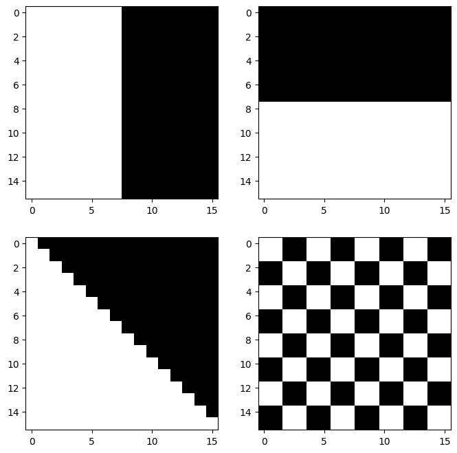
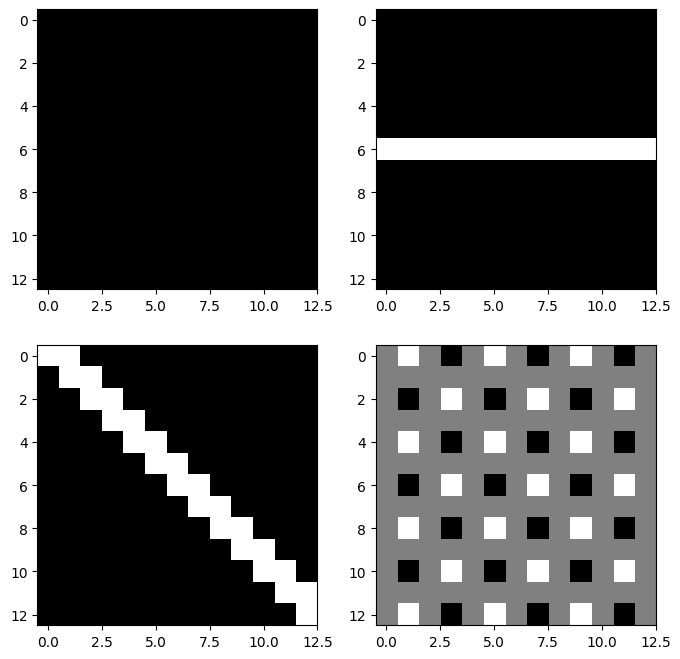
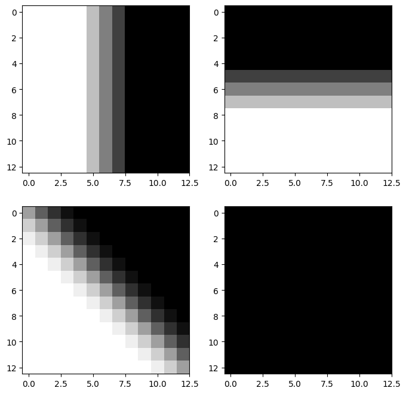
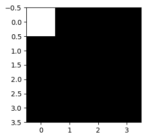

# {{<video https://youtu.be/playlist?list=PLQqh36zP38-xB7p8AzMKUrEfxL0Vte-pY&si=BwVUNxT8IIPrjIcA>}}12wk:

1. 강의영상
5. CNN의 학습원리
A. data
아래의 4개의 이미지를 생각하자 .
img0 = torch.tensor([
[0.1, 0.1, 0.1, 0.1, 0.1, 0.1, 0.1, 0.1, 0.0, 0.0, 0.0, 0.0, 0.0, 0.0, 0.0, 0.0],
[0.1, 0.1, 0.1, 0.1, 0.1, 0.1, 0.1, 0.1, 0.0, 0.0, 0.0, 0.0, 0.0, 0.0, 0.0, 0.0],
[0.1, 0.1, 0.1, 0.1, 0.1, 0.1, 0.1, 0.1, 0.0, 0.0, 0.0, 0.0, 0.0, 0.0, 0.0, 0.0],
[0.1, 0.1, 0.1, 0.1, 0.1, 0.1, 0.1, 0.1, 0.0, 0.0, 0.0, 0.0, 0.0, 0.0, 0.0, 0.0],
[0.1, 0.1, 0.1, 0.1, 0.1, 0.1, 0.1, 0.1, 0.0, 0.0, 0.0, 0.0, 0.0, 0.0, 0.0, 0.0],
[0.1, 0.1, 0.1, 0.1, 0.1, 0.1, 0.1, 0.1, 0.0, 0.0, 0.0, 0.0, 0.0, 0.0, 0.0, 0.0],
[0.1, 0.1, 0.1, 0.1, 0.1, 0.1, 0.1, 0.1, 0.0, 0.0, 0.0, 0.0, 0.0, 0.0, 0.0, 0.0],
[0.1, 0.1, 0.1, 0.1, 0.1, 0.1, 0.1, 0.1, 0.0, 0.0, 0.0, 0.0, 0.0, 0.0, 0.0, 0.0],
[0.1, 0.1, 0.1, 0.1, 0.1, 0.1, 0.1, 0.1, 0.0, 0.0, 0.0, 0.0, 0.0, 0.0, 0.0, 0.0],
[0.1, 0.1, 0.1, 0.1, 0.1, 0.1, 0.1, 0.1, 0.0, 0.0, 0.0, 0.0, 0.0, 0.0, 0.0, 0.0],
[0.1, 0.1, 0.1, 0.1, 0.1, 0.1, 0.1, 0.1, 0.0, 0.0, 0.0, 0.0, 0.0, 0.0, 0.0, 0.0],
[0.1, 0.1, 0.1, 0.1, 0.1, 0.1, 0.1, 0.1, 0.0, 0.0, 0.0, 0.0, 0.0, 0.0, 0.0, 0.0],
[0.1, 0.1, 0.1, 0.1, 0.1, 0.1, 0.1, 0.1, 0.0, 0.0, 0.0, 0.0, 0.0, 0.0, 0.0, 0.0],
[0.1, 0.1, 0.1, 0.1, 0.1, 0.1, 0.1, 0.1, 0.0, 0.0, 0.0, 0.0, 0.0, 0.0, 0.0, 0.0],
[0.1, 0.1, 0.1, 0.1, 0.1, 0.1, 0.1, 0.1, 0.0, 0.0, 0.0, 0.0, 0.0, 0.0, 0.0, 0.0],
[0.1, 0.1, 0.1, 0.1, 0.1, 0.1, 0.1, 0.1, 0.0, 0.0, 0.0, 0.0, 0.0, 0.0, 0.0, 0.0]
]).reshape(1, 1, 16, 16)
img1 = 0.1-torch.einsum('nchw->ncwh', img0.clone())
img2 = torch.zeros((1, 1, 16, 16))
for i in range(16):
for j in range(16):
if j <= i: # 대각선 아래 삼각형
img2[0, 0, i, j] = 0.1
# 빈 이미지
img3 = torch.zeros((1, 1, 16, 16))
block_size = 2
# 블록 단위로 채우기
for i in range(0, 16, block_size):
for j in range(0, 16, block_size):
if ((i // block_size) + (j // block_size)) % 2 == 0:
img3[0, 0, i:i+block_size, j:j+block_size] = 0.1fig, axs = plt.subplots(2,2)
fig.set_figheight(8)
fig.set_figwidth(8)
axs[0][0].imshow(img0.squeeze(),cmap="gray")
axs[0][1].imshow(img1.squeeze(),cmap="gray")
axs[1][0].imshow(img2.squeeze(),cmap="gray")
axs[1][1].imshow(img3.squeeze(),cmap="gray")
imgs = torch.concat([img0,img1,img2,img3],axis=0)
imgs.shapetorch.Size([4, 1, 16, 16])B. vertical edge
v_conv = torch.nn.Conv2d(
in_channels=1,
out_channels=1,
kernel_size=4,
bias=False
)v_conv.weight.data = torch.tensor([[[
[ 0, 0, 0, 0],
[ 0, 1.0, -1.0, 0],
[0, 1.0, -1.0, 0],
[ 0, 0, 0, 0]
]]])이
v_conv는 좌우방향의 픽셀변화, 즉 수직 방향의 엣지(vertical edge)를 감지하는데 적절하다.
fig, axs = plt.subplots(2,2)
fig.set_figheight(8)
fig.set_figwidth(8)
axs[0][0].imshow(v_conv(imgs)[0].squeeze().data,cmap="gray")
axs[0][1].imshow(v_conv(imgs)[1].squeeze().data,cmap="gray")
axs[1][0].imshow(v_conv(imgs)[2].squeeze().data,cmap="gray")
axs[1][1].imshow(v_conv(imgs)[3].squeeze().data,cmap="gray")
C. horizontal edge
h_conv = torch.nn.Conv2d(
in_channels=1,
out_channels=1,
kernel_size=4,
bias=False
)h_conv.weight.data = torch.tensor([[[
[ 0, 0, 0, 0],
[ 0, -1.0, -1.0, 0],
[0, 1.0, 1.0, 0],
[ 0, 0, 0, 0]
]]])이
h_conv는 위아레 방향의 픽셀변화, 즉 수평엣지(horizontal edge)를 감지하는데 적절하다.
fig, axs = plt.subplots(2,2)
fig.set_figheight(8)
fig.set_figwidth(8)
axs[0][0].imshow(h_conv(imgs)[0].squeeze().data,cmap="gray")
axs[0][1].imshow(h_conv(imgs)[1].squeeze().data,cmap="gray")
axs[1][0].imshow(h_conv(imgs)[2].squeeze().data,cmap="gray")
axs[1][1].imshow(h_conv(imgs)[3].squeeze().data,cmap="gray")
D. 이동평균
m_conv = torch.nn.Conv2d(
in_channels=1,
out_channels=1,
kernel_size=4,
)
m_conv.weight.data = m_conv.weight.data*0 + 1/16
m_conv.bias.data = m_conv.bias.data*0 - 0.05fig, axs = plt.subplots(2,2)
fig.set_figheight(8)
fig.set_figwidth(8)
axs[0][0].imshow(m_conv(imgs)[0].squeeze().data,cmap="gray")
axs[0][1].imshow(m_conv(imgs)[1].squeeze().data,cmap="gray")
axs[1][0].imshow(m_conv(imgs)[2].squeeze().data,cmap="gray")
axs[1][1].imshow(m_conv(imgs)[3].squeeze().data,cmap="gray")
E. (C,D,E) + relu + mp
relu = torch.nn.ReLU()
mp = torch.nn.MaxPool2d(kernel_size=13)mp(relu(v_conv(imgs)))tensor([[[[0.200000]]],
[[[0.000000]]],
[[[0.100000]]],
[[[0.200000]]]], grad_fn=<MaxPool2DWithIndicesBackward0>)mp(relu(h_conv(imgs)))tensor([[[[0.000000]]],
[[[0.200000]]],
[[[0.100000]]],
[[[0.200000]]]], grad_fn=<MaxPool2DWithIndicesBackward0>)mp(relu(m_conv(imgs)))tensor([[[[2.000000e-01]]],
[[[2.000000e-01]]],
[[[2.000000e-01]]],
[[[3.725290e-09]]]], grad_fn=<MaxPool2DWithIndicesBackward0>)F. 대충 이런 구조
net = torch.nn.Sequential(
torch.nn.Conv2d(in_channels=1,out_channels=3,kernel_size=4),
torch.nn.ReLU(),
torch.nn.MaxPool2d(kernel_size=13),
torch.nn.Flatten()
)
net[0].weight.data = torch.concat(
[v_conv.weight.data,
h_conv.weight.data,
m_conv.weight.data],axis=0)
net[0].bias.data = torch.tensor([0.0,0.0, -0.05])plt.matshow(net(imgs).data,cmap="gray")
net(imgs).shapetorch.Size([4, 3])출력은 (n,3)으로 정리되어서 나온다. 이 시점부터는 더 이상 이미지가 입력이라고 생각하지 않아도 되고, 단순히 (n, 3) 크기의 숫자 데이터가 입력으로 주어진 것처럼 보면 된다. 즉 이제부터는 이 (n,3) 데이터를 입력으로 받는 신경망을 설계하면 된다.
G. mp의 역할?
- 샘플이미지
img = torch.zeros((1, 1, 16, 16))
triangle_size = 4
for i in range(triangle_size):
for j in range(triangle_size):
if j <= i: # 아래 방향 직각삼각형 (왼쪽 위 꼭짓점 기준)
img[0, 0, i, j] = 1.0plt.imshow(img.squeeze(),cmap="gray")
- mp1 회
mp = torch.nn.MaxPool2d(kernel_size=2)
plt.imshow(mp(img).squeeze(),cmap="gray")
- mp 2~4회
mp = torch.nn.MaxPool2d(kernel_size=2)
plt.imshow(mp(mp(img)).squeeze(),cmap="gray")
mp = torch.nn.MaxPool2d(kernel_size=2)
plt.imshow(mp(mp(mp(img))).squeeze(),cmap="gray")
- maxpooling은 이미지를 “캐리커처화” 한다고 비유할 수 있음. 디테일은 버리고, 중요한 특징만 뽑아서 과장되게 요약한다.
6. FashionMNIST
- 데이터
train_dataset = torchvision.datasets.FashionMNIST(root='./data', train=True, download=True)
train_dataset = torch.utils.data.Subset(train_dataset, range(5000))
to_tensor = torchvision.transforms.ToTensor()
X = torch.stack([to_tensor(img) for img, lbl in train_dataset]).to("cuda:0")
y = torch.tensor([lbl for img, lbl in train_dataset])
y = torch.nn.functional.one_hot(y).float().to("cuda:0")- 2d를 처리하고 flatten하는 네트워크
net1 = torch.nn.Sequential(
torch.nn.Conv2d(in_channels=1,out_channels=16,kernel_size=5),
torch.nn.ReLU(),
torch.nn.MaxPool2d(kernel_size=2),
torch.nn.Flatten()
).to("cuda:0")net1(X).shapetorch.Size([5000, 2304])출력은 (n,2304)으로 정리되어서 나온다. 이 시점부터는 더 이상 이미지가 입력이라고 생각하지 않아도 되고, 단순히 (n, 2304) 크기의 숫자 데이터가 입력으로 주어진 것처럼 보면 된다. 즉 이제부터는 이 (n,2304) 데이터를 입력으로 받는 신경망을 설계하면 된다.
- 1d를 처리하는 네트워크
net2= torch.nn.Sequential(
torch.nn.Linear(2304,10),
).to("cuda:0")net2(net1(X)).shapetorch.Size([5000, 10])- 두 네트워크를 결합
net = torch.nn.Sequential(
net1,
net2
)
net(X).shapetorch.Size([5000, 10])- 최종적인 코드
net = torch.nn.Sequential(
net1,
net2
)
loss_fn = torch.nn.CrossEntropyLoss()
optimizr=torch.optim.Adam(net.parameters())
#---#
for epoc in range(100):
#1
netout = net(X)
#2
loss = loss_fn(netout,y)
#3
loss.backward()
#4
optimizr.step()
optimizr.zero_grad()(net(X).argmax(axis=1) == y.argmax(axis=1)).float().mean()tensor(0.883800, device='cuda:0')7. MNIST
train_dataset = torchvision.datasets.MNIST(root='./data', train=True, download=True,transform=torchvision.transforms.ToTensor())
test_dataset = torchvision.datasets.MNIST(root='./data', train=False, download=True,transform=torchvision.transforms.ToTensor())
X,y = next(iter(torch.utils.data.DataLoader(train_dataset,batch_size=6000,shuffle=True)))
XX,yy = next(iter(torch.utils.data.DataLoader(train_dataset,batch_size=1000,shuffle=True)))100.0%
100.0%
100.0%
100.0%net = torch.nn.Sequential(
torch.nn.Conv2d(1,32,kernel_size=5),
torch.nn.ReLU(),
torch.nn.MaxPool2d(kernel_size=2),
torch.nn.Conv2d(32,32,kernel_size=3),
torch.nn.ReLU(),
torch.nn.Flatten(),
#---#
torch.nn.Linear(3200,10)
)
loss_fn = torch.nn.CrossEntropyLoss()
optimizr = torch.optim.Adam(net.parameters())
#---#
net.to("cuda:0")
X = X.to("cuda:0")
y = y.to("cuda:0")
XX = XX.to("cuda:0")
yy = yy.to("cuda:0")
#---#
for epoc in range(100):
#1
netout = net(X)
#2
loss = loss_fn(netout,y)
#3
loss.backward()
#4
optimizr.step()
optimizr.zero_grad()(net(X).argmax(axis=1) == y).float().mean()tensor(0.9733, device='cuda:0')(net(XX).argmax(axis=1) == yy).float().mean()tensor(0.9540, device='cuda:0')torch.cuda.empty_cache()8. CIFAR10
train_dataset = torchvision.datasets.CIFAR10(root='./data', train=True, download=True,transform=torchvision.transforms.ToTensor())
test_dataset = torchvision.datasets.CIFAR10(root='./data', train=False, download=True,transform=torchvision.transforms.ToTensor())
X,y = next(iter(torch.utils.data.DataLoader(train_dataset,batch_size=10000,shuffle=True)))
XX,yy = next(iter(torch.utils.data.DataLoader(train_dataset,batch_size=2000,shuffle=True)))100.0%A. 직접설계
net = torch.nn.Sequential(
torch.nn.Conv2d(3,32,kernel_size=5),
torch.nn.ReLU(),
torch.nn.MaxPool2d(kernel_size=2),
torch.nn.Conv2d(32,32,kernel_size=3),
torch.nn.ReLU(),
torch.nn.Flatten(),
#---#
torch.nn.Linear(4608,10)
)
loss_fn = torch.nn.CrossEntropyLoss()
optimizr = torch.optim.Adam(net.parameters())
#---#
net.to("cuda:0")
X = X.to("cuda:0")
y = y.to("cuda:0")
XX = XX.to("cuda:0")
yy = yy.to("cuda:0")
#---#
for epoc in range(500):
#1
netout = net(X)
#2
loss = loss_fn(netout,y)
#3
loss.backward()
#4
optimizr.step()
optimizr.zero_grad()(net(X).argmax(axis=1) == y).float().mean()tensor(0.7344, device='cuda:0')(net(XX).argmax(axis=1) == yy).float().mean()tensor(0.6080, device='cuda:0')- 표현력자체에 문제가 있어보임
torch.cuda.empty_cache()B. 알렉스넷?

img = torch.zeros(1,3*224*224).reshape(1,3,224,224)
img.shapetorch.Size([1, 3, 224, 224])net = torch.nn.Sequential(
torch.nn.Conv2d(3,96,kernel_size=(11,11),stride=4),
torch.nn.ReLU(),
torch.nn.MaxPool2d((3,3),stride=2), # default stride는 3
torch.nn.Conv2d(96,256,kernel_size=(5,5),padding=2),
torch.nn.ReLU(),
torch.nn.MaxPool2d((3,3),stride=2), # default stride는 3
torch.nn.Conv2d(256,384,kernel_size=(3,3),padding=1),
torch.nn.ReLU(),
torch.nn.Conv2d(384,384,kernel_size=(3,3),padding=1),
torch.nn.ReLU(),
torch.nn.Conv2d(384,256,kernel_size=(3,3),padding=1),
torch.nn.ReLU(),
torch.nn.MaxPool2d((3,3),stride=2),
torch.nn.Flatten(),
torch.nn.Linear(6400,4096),
torch.nn.ReLU(),
torch.nn.Dropout(0.5),
torch.nn.Linear(4096,4096),
torch.nn.ReLU(),
torch.nn.Dropout(0.5),
torch.nn.Linear(4096,1000),
)C. 알렉스넷으로 ImageNet 적합
net[-1] = torch.nn.Linear(4096,10)img = torch.randn(1,3,32,32)net(img)RuntimeError: Given input size: (256x2x2). Calculated output size: (256x0x0). Output size is too smallnet[:5](img).shapetorch.Size([1, 256, 2, 2])net[5]MaxPool2d(kernel_size=(3, 3), stride=2, padding=0, dilation=1, ceil_mode=False)실패 ㅠㅠ
D. renset18
- res: https://arxiv.org/pdf/1512.03385
net = torchvision.models.resnet18()
# net net.fc = torch.nn.Linear(512,10)loss_fn = torch.nn.CrossEntropyLoss()
optimizr = torch.optim.Adam(net.parameters())
#---#
net.to("cuda:0")
X = X.to("cuda:0")
y = y.to("cuda:0")
XX = XX.to("cuda:0")
yy = yy.to("cuda:0")
#---#
for epoc in range(500):
#1
netout = net(X)
#2
loss = loss_fn(netout,y)
#3
loss.backward()
#4
optimizr.step()
optimizr.zero_grad()net.eval()
print((net(X).argmax(axis=1) == y).float().mean())
print((net(XX).argmax(axis=1) == yy).float().mean())tensor(1., device='cuda:0')
tensor(0.5930, device='cuda:0')- 오버피팅이 있어보긴하지만 표현력자체는 올라감
torch.cuda.empty_cache()E. resnet18, pretrained=True
- 아이디어: 하나를 잘하는 모델은 다른것도 잘하지 않을까? <– transfer learning
net = torchvision.models.resnet18(pretrained=True) # 아키텍처 + 학습된 가중치까지
net.fc = torch.nn.Linear(512,10)/home/cgb3/anaconda3/envs/dl2025/lib/python3.9/site-packages/torchvision/models/_utils.py:208: UserWarning: The parameter 'pretrained' is deprecated since 0.13 and may be removed in the future, please use 'weights' instead.
warnings.warn(
/home/cgb3/anaconda3/envs/dl2025/lib/python3.9/site-packages/torchvision/models/_utils.py:223: UserWarning: Arguments other than a weight enum or `None` for 'weights' are deprecated since 0.13 and may be removed in the future. The current behavior is equivalent to passing `weights=ResNet18_Weights.IMAGENET1K_V1`. You can also use `weights=ResNet18_Weights.DEFAULT` to get the most up-to-date weights.
warnings.warn(msg)loss_fn = torch.nn.CrossEntropyLoss()
optimizr = torch.optim.Adam(net.parameters())
#---#
net.to("cuda:0")
X = X.to("cuda:0")
y = y.to("cuda:0")
XX = XX.to("cuda:0")
yy = yy.to("cuda:0")
#---#
for epoc in range(500):
#1
netout = net(X)
#2
loss = loss_fn(netout,y)
#3
loss.backward()
#4
optimizr.step()
optimizr.zero_grad()net.eval()
print((net(X).argmax(axis=1) == y).float().mean())
print((net(XX).argmax(axis=1) == yy).float().mean())tensor(1., device='cuda:0')
tensor(0.8050, device='cuda:0')- 잘함 (오버피팅은 여전히 있음)
torch.cuda.empty_cache()